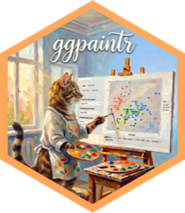
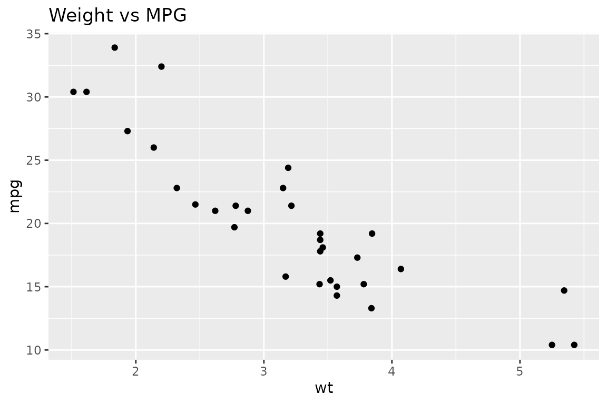

ggpaintr Extensibility
Source:vignettes/ggpaintr-extensibility.Rmd
ggpaintr-extensibility.Rmd1. Motivation
ptr_app() (Level 1, covered in
vignette("ggpaintr-workflow")) is the fastest path from a
formula to a running Shiny app. It also owns the entire page: the
sidebar, the draw button, the plot, and the code output. That is perfect
for teaching and quick demos, and wrong for anything else.
This vignette covers the two situations where ptr_app()
is not enough:
- Level 2 — Embed ggpaintr in your own Shiny app. You already have a Shiny app (a dashboard, a course site, a client deliverable) and you want one of its tabs to hold a ggpaintr-driven plot. You need to control layout, copy, and element ids; you do not want to rewrite the runtime.
-
Level 3 — Drive the runtime without a full app. You
want a plot from a formula without launching Shiny (batch reports, test
fixtures), or you want to post-process the
ggplotobject before rendering, or you want to generate ggplot code strings programmatically.
Both levels are built on the same parse/compose pipeline that
ptr_app() uses internally. The public API gives you exactly
the extension seams ptr_app() uses itself — no hidden
state, no private bridge functions.
If your goal instead is to add a new placeholder type (a
date picker, a slider, a colour well), skip to
vignette("ggpaintr-placeholder-registry"). That vignette
owns the placeholder-registry contract end-to-end; this one tells you
how to register those placeholders into an embedded or headless workflow
once you have them.
2. Extensibility model
Level 1 — turn-key app
┌────────────────────────────────────────────┐
│ ptr_app(formula) ptr_app_bslib(...) │
└───────────────┬────────────────────────────┘
│ builds on
▼
Level 2 — embed in your own Shiny app
┌────────────────────────────────────────────┐
│ ptr_input_ui() ptr_output_ui() │
│ ptr_server_state() ptr_build_ids() │
│ ptr_setup_controls() ptr_register_draw()│
│ ptr_register_plot() ptr_register_error()│
│ ptr_register_code() ptr_server() │
└───────────────┬────────────────────────────┘
│ builds on
▼
Level 3 — developer API
┌────────────────────────────────────────────┐
│ ptr_parse_formula() ptr_runtime_input_spec()
│ ptr_exec() ptr_assemble_plot() │
│ ptr_extract_plot() ptr_extract_code() │
│ ptr_extract_error() ptr_gg_extra() │
│ ptr_missing_expr() │
└────────────────────────────────────────────┘Each level is a strict superset of the surface below it. Level 1 is
ptr_server() + a fluid-page shell;
ptr_server() is ptr_server_state() + the five
ptr_register_*() helpers; and the register helpers read
reactive values maintained by ptr_server_state() and
compute by calling Level-3 primitives.
Customization also lives at every level. The options below are shared by all three entry points and are documented once here:
-
ui_text— override labels, help text, placeholder hints, and the fallback text for empty inputs. See §3e. -
placeholders— register new placeholder keywords or replace built-ins. Seevignette("ggpaintr-placeholder-registry"). -
expr_check— tune the safety check applied to user-suppliedexprinputs. Seevignette("ggpaintr-workflow"), §3.4.
3. Level 2 — embed ggpaintr in your own Shiny app
3a. Minimal embed
The smallest embed that still behaves like ptr_app().
You hand ggpaintr the formula through ptr_server_state(),
place its input and output widgets inside your own layout, and wire the
five default binders.
ui <- fluidPage(
titlePanel("Embedded ggpaintr"),
sidebarLayout(
sidebarPanel(
ptr_input_ui()
),
mainPanel(
ptr_output_ui()
)
)
)
server <- function(input, output, session) {
ptr_state <- ptr_server_state(
"ggplot(data = mtcars, aes(x = var, y = var)) +
geom_point() +
labs(title = text)"
)
ptr_setup_controls(input, output, ptr_state)
ptr_register_draw(input, ptr_state)
ptr_register_plot(output, ptr_state)
ptr_register_error(output, ptr_state)
ptr_register_code(output, ptr_state)
}
shinyApp(ui, server)Six public calls are doing the work:
-
ptr_input_ui()renders auiOutput()slot for the generated controls plus a “Update plot” action button. -
ptr_output_ui()renders theplotOutput(), the erroruiOutput(), and averbatimTextOutput()for the generated code. -
ptr_server_state(formula)parses the formula and returns aptr_stateobject holding reactive values:obj,runtime,extras,var_ui_list, and a few shared metadata slots. This object is what you pass around to every binder. -
ptr_setup_controls()observes the dynamicvarcontrols (so their choices update as uploads resolve) and renders the tabbed control panel intoids$control_panel. -
ptr_register_draw()observes the draw button and updatesptr_state$runtime()with the latestptr_exec()result. -
ptr_register_plot()/ptr_register_error()/ptr_register_code()read the reactive result and render it.
Every binder accepts ptr_state as its contract. None of
them touch private state on the state object — you can drop any binder
you do not need (for example, ptr_register_code() if you do
not want code output), and you can replace any of them with your own
implementation that reads ptr_state$runtime().
3b. Splitting plot, code, and error panels
Embedded apps often want the plot, the code, and the error message in
different places. Because each ptr_register_*() helper
writes to a single output id, you can place each output wherever you
want in the layout.
ui <- fluidPage(
titlePanel("ggpaintr with split outputs"),
fluidRow(
column(4,
tags$h4("Controls"),
uiOutput("controlPanel"),
actionButton("draw", "Update plot")
),
column(8,
tabsetPanel(
tabPanel("Plot", plotOutput("outputPlot")),
tabPanel("Code", verbatimTextOutput("outputCode")),
tabPanel("Status", uiOutput("outputError"))
)
)
)
)
server <- function(input, output, session) {
ptr_state <- ptr_server_state(
"ggplot(data = mtcars, aes(x = var, y = var)) + geom_point()"
)
ptr_setup_controls(input, output, ptr_state)
ptr_register_draw(input, ptr_state)
ptr_register_plot(output, ptr_state)
ptr_register_code(output, ptr_state)
ptr_register_error(output, ptr_state)
}
shinyApp(ui, server)The three register helpers are independent — each one writes to the
output id named in ptr_state$ids. The default ids above
match the defaults from ptr_build_ids(), which is why we
did not have to pass ids = ... anywhere. Customizing ids is
§3d.
3c. Multiple ggpaintr instances in one session
Put more than one ggpaintr instance in the same Shiny session — two
tabs, a side-by-side comparison, a module called several times — and
their widget ids collide by default. Namespace each instance with
ns = to keep them disjoint.
ns is a function of the shape
character -> character. The default
shiny::NS(NULL) is the identity (no prefix), which
reproduces pre-ns behavior. Pass
shiny::NS("my_prefix") to prefix every widget id ggpaintr
owns — the top-level ids on ptr_state$ids, the
per-placeholder input ids, the checkbox ids, and the dynamic
var output ids — with "my_prefix-".
The same ns must be threaded through three call sites
per instance: ptr_input_ui(), ptr_output_ui(),
and ptr_server_state() (or its wrapper
ptr_server()). The ids = argument is
independent — sharing the same custom_ids across instances
is fine, because ns is what disambiguates them.
ns_a <- shiny::NS("plot_a")
ns_b <- shiny::NS("plot_b")
ui <- fluidPage(
tabsetPanel(
tabPanel("A",
fluidRow(
column(4, ptr_input_ui(ns = ns_a)),
column(8, ptr_output_ui(ns = ns_a))
)),
tabPanel("B",
fluidRow(
column(4, ptr_input_ui(ns = ns_b)),
column(8, ptr_output_ui(ns = ns_b))
))
)
)
server <- function(input, output, session) {
ptr_server(
input, output, session,
formula = "ggplot(data = mtcars, aes(x = var, y = var)) + geom_point()",
ns = ns_a
)
ptr_server(
input, output, session,
formula = "ggplot(data = iris, aes(x = var, y = var)) + geom_point()",
ns = ns_b
)
}Inside shiny::moduleServer(), pass
session$ns — it is a namespace function identical in shape
to shiny::NS(id) for the enclosing module id, so the UI
(built with shiny::NS(id)) and the server (using
session$ns) agree. No double-prefixing occurs because
ggpaintr applies ns exactly once to raw ids.
tab_ui <- function(id) {
ns <- shiny::NS(id)
shiny::tagList(ptr_input_ui(ns = ns), ptr_output_ui(ns = ns))
}
tab_server <- function(id, formula) {
shiny::moduleServer(id, function(input, output, session) {
ptr_server(input, output, session, formula = formula, ns = session$ns)
})
}The single failure mode is reusing the same ns (or
leaving it at its default) across two instances in the same session.
Then the resolved ids collide and Shiny silently keeps only the last
output[[id]] <- assignment — one instance appears empty.
Sanity check any wiring by inspecting the resolved ids in the
console:
state_a <- ptr_server_state(formula_a, ns = ns_a)
state_b <- ptr_server_state(formula_b, ns = ns_b)
length(intersect(unlist(state_a$ids), unlist(state_b$ids))) # expect 03d. Custom ids
ptr_build_ids() returns a validated list describing the
five top-level Shiny ids ggpaintr uses. Override it when your host app
already uses one of the default names, or when you want ggpaintr outputs
in specific containers.
Full signature, with defaults:
ptr_build_ids(
control_panel = "controlPanel", # uiOutput that holds the tabbed controls
draw_button = "draw", # actionButton that triggers a redraw
plot_output = "outputPlot", # plotOutput widget
error_output = "outputError", # uiOutput for inline error messages
code_output = "outputCode" # verbatimTextOutput for the generated code
)Every field is a single non-empty string; duplicate values are
rejected. The returned object has class ptr_build_ids and
is the only accepted type for the ids = argument on every
Level-2 helper.
ids <- ptr_build_ids(
control_panel = "builder_controls",
draw_button = "render_plot",
plot_output = "main_plot",
error_output = "main_error",
code_output = "main_code"
)
ids
#> $control_panel
#> [1] "builder_controls"
#>
#> $draw_button
#> [1] "render_plot"
#>
#> $plot_output
#> [1] "main_plot"
#>
#> $error_output
#> [1] "main_error"
#>
#> $code_output
#> [1] "main_code"
#>
#> attr(,"class")
#> [1] "ptr_build_ids" "list"Pass the same ids object everywhere so UI and server
stay in sync:
ui <- fluidPage(
sidebarLayout(
sidebarPanel(
ptr_input_ui(ids = ids)
),
mainPanel(
ptr_output_ui(ids = ids)
)
)
)
server <- function(input, output, session) {
ptr_state <- ptr_server_state(
"ggplot(data = mtcars, aes(x = var, y = var)) + geom_point()",
ids = ids
)
ptr_setup_controls(input, output, ptr_state)
ptr_register_draw(input, ptr_state)
ptr_register_plot(output, ptr_state)
ptr_register_error(output, ptr_state)
ptr_register_code(output, ptr_state)
}ptr_server_state() stores the ids on
ptr_state$ids, which every other helper reads automatically
— so you only pass ids once, at state construction
time.
Only these five top-level ids are configurable. Per-placeholder input
ids (the ones generated by ptr_parse_formula()) and the
internal var-* helper ids are deterministic and
package-owned.
3e. Overriding UI copy
ui_text is the single argument for customising every
user-visible string ggpaintr renders. Pass it to
ptr_server_state(), ptr_server(),
ptr_app(), or ptr_app_bslib() — they all hand
it to the same merge function.
3e.1 The four leaf fields
Every override is a named list whose leaves hold one or more of the same four string fields:
| Field | Purpose |
|---|---|
label |
Primary widget label (shown above the input). |
help |
Help text rendered below the widget. |
placeholder |
Greyed-out hint inside a text input. |
empty_text |
Fallback text shown when a var picker is empty. |
Not every placeholder reads every field. The table below is the
authoritative per-placeholder mapping — verified against the current
widget builders in R/paintr-ui.R.
| Placeholder | Widget | label |
help |
placeholder |
empty_text |
|---|---|---|---|---|---|
var |
shinyWidgets::pickerInput |
✅ | ✅ | — | ✅ |
text |
shiny::textInput |
✅ | ✅ | ✅ | — |
num |
shiny::numericInput |
✅ | ✅ | — | — |
expr |
shiny::textInput |
✅ | ✅ | ✅ | — |
upload (file) |
shiny::fileInput |
✅ | — | — | — |
upload (name) |
shiny::textInput |
✅ | ✅ | ✅ | — |
Unused fields are simply ignored. You can still set help
on a num or empty_text on a text
— they will pass validation but will never be rendered.
You can inspect the merged defaults at any time by calling
ptr_merge_ui_text() with no overrides:
defaults <- ptr_merge_ui_text(NULL)
names(defaults)
#> [1] "shell" "upload" "layer_checkbox" "defaults"
#> [5] "params" "layers"
defaults$defaults$var
#> $label
#> [1] "Choose a column for {param}"
#>
#> $empty_text
#> [1] "Choose one column"
defaults$defaults$text
#> $label
#> [1] "Enter text for {param}"
defaults$defaults$num
#> $label
#> [1] "Enter a number for {param}"The defaults branch is what
ptr_merge_ui_text() falls back to when a more specific
layer does not supply a value.
3e.2 Top-level sections and merge precedence
A ui_text list has six top-level
sections. Three of them (shell, upload,
layer_checkbox) map 1-to-1 to chrome widgets and do
not participate in the layer cascade. The other three
(defaults, params, layers) form a
three-level specificity cascade for per-placeholder copy. Higher
specificity wins; the merge is deep, field by field, so you can override
one label without clobbering the sibling
help.
| Top-level key | Role | Participates in cascade? |
|---|---|---|
shell |
Page title and draw-button label. | no |
upload |
The paired upload widgets (file +
name). |
no |
layer_checkbox |
The “include this layer” toggle for non-ggplot
layers. |
no |
defaults |
Per-keyword fallback used everywhere. | yes — least specific |
params |
Copy for a specific ggplot argument name (x,
color, …). |
yes |
layers |
Copy for one keyword in one aesthetic of one specific layer. | yes — most specific |
The resolution order for a control (any
defaults / params / layers entry)
is:
-
defaults[[keyword]](from the merged defaults that ship with ggpaintr, plus anything you put underdefaults). -
params[[param_key]][[keyword]]— whereparam_keyis the canonical form of the ggplot argument name. -
layers[[layer_name]][[keyword]][[param_key]]— specific to one layer.
Unnamed positional arguments (for example the first argument of
facet_wrap(expr)) resolve under the literal key
__unnamed__ at the layers level.
Parameter names are normalised before lookup:
-
colour→color -
size→linewidth
Keep your overrides under the canonical names (color,
linewidth) or the British spellings — either works, both
land in the same slot.
3e.3 Chrome sections — shell, upload,
layer_checkbox
The three non-cascade sections each map to fixed UI components.
ui_text <- list(
shell = list(
title = list(label = "My app"), # page title
draw_button = list(label = "Draw it") # action-button text
),
upload = list(
file = list(label = "Upload a dataset"), # fileInput label
name = list( # companion name textInput
label = "Name it",
placeholder = "e.g. sales",
help = "Accepted: .csv, .rds"
)
),
layer_checkbox = list(label = "Include this layer") # per-non-ggplot-layer toggle
)shell only accepts title and
draw_button. upload only accepts
file and name. layer_checkbox is
a leaf rule itself (no sub-sections). Any other key at those levels
triggers a validation error.
3e.4 Worked example — same placeholder, three scopes
The best way to build intuition is to watch one keyword receive
different copy under each scope. The example below uses the
text keyword and the title argument of
labs().
obj <- ptr_parse_formula(
"ggplot(data = mtcars, aes(x = var, y = var)) +
geom_point() +
labs(title = text)"
)
ui_text <- list(
defaults = list(
text = list(
label = "Enter text",
help = "Generic help (from defaults)"
)
),
params = list(
title = list(
text = list(
label = "Plot title",
help = "Arg-specific help (from params$title)"
)
)
),
layers = list(
labs = list(
text = list(
title = list(
label = "labs(title = …) override",
help = "Layer-specific help (from layers$labs)",
placeholder = "e.g. Weight vs MPG"
)
)
)
)
)Calling ptr_resolve_ui_text() directly shows the scope
chosen for a given (keyword, param, layer_name) triple. The
returned list has the resolved leaf fields — whatever the deepest
matching layer supplied, with sibling fields filled in from
less-specific scopes.
# Only (keyword = "text") — lands in defaults$text
ptr_resolve_ui_text(
"control", keyword = "text",
ui_text = ui_text
)
#> $label
#> [1] "Enter text"
#>
#> $help
#> [1] "Generic help (from defaults)"
# Add param = "title" — now params$title$text wins on label/help,
# but defaults still fill in anything params did not set.
ptr_resolve_ui_text(
"control", keyword = "text", param = "title",
ui_text = ui_text
)
#> $label
#> [1] "Plot title"
#>
#> $help
#> [1] "Arg-specific help (from params$title)"
# Add layer_name = "labs" — layers$labs$text$title wins on every
# field it supplies, params fills in anything layers did not.
ptr_resolve_ui_text(
"control", keyword = "text", param = "title", layer_name = "labs",
ui_text = ui_text
)
#> $label
#> [1] "labs(title = …) override"
#>
#> $help
#> [1] "Layer-specific help (from layers$labs)"
#>
#> $placeholder
#> [1] "e.g. Weight vs MPG"
# A different layer with the same keyword/param — no layers entry
# exists, so resolution falls back to params.
ptr_resolve_ui_text(
"control", keyword = "text", param = "title", layer_name = "geom_text",
ui_text = ui_text
)
#> $label
#> [1] "Plot title"
#>
#> $help
#> [1] "Arg-specific help (from params$title)"The same merge applies when ptr_setup_controls() builds
the UI — once per placeholder in the formula, using the placeholder’s
real (keyword, param, layer_name).
3e.5 Resolving chrome copy
Use the short component names (no keyword) to resolve
the non-cascade sections. Each name maps to a specific path in the
merged rules object:
ui_text_chrome <- list(
shell = list(
title = list(label = "My custom title"),
draw_button = list(label = "Render plot")
),
upload = list(
file = list(label = "Pick a CSV or RDS file")
),
layer_checkbox = list(label = "Include this layer")
)
ptr_resolve_ui_text("title", ui_text = ui_text_chrome)
#> $label
#> [1] "My custom title"
ptr_resolve_ui_text("draw_button", ui_text = ui_text_chrome)
#> $label
#> [1] "Render plot"
ptr_resolve_ui_text("upload_file", ui_text = ui_text_chrome)
#> $label
#> [1] "Pick a CSV or RDS file"
ptr_resolve_ui_text("upload_name", ui_text = ui_text_chrome)
#> $label
#> [1] "Optional dataset name"
#>
#> $placeholder
#> [1] "For example: sales_data"
#>
#> $help
#> [1] "Accepted formats: .csv and .rds. Leave the name blank to use the file name in generated code."
ptr_resolve_ui_text("layer_checkbox", ui_text = ui_text_chrome)
#> $label
#> [1] "Include this layer"The six component names accepted by
ptr_resolve_ui_text() are:
-
"control"— anything underdefaults/params/layers. Requireskeyword = ...; accepts optionalparam =andlayer_name =. -
"title"/"draw_button"— the twoshellsub-keys. -
"upload_file"/"upload_name"— the twouploadsub-keys. -
"layer_checkbox"— the top-levellayer_checkboxleaf.
3e.6 Validating a ui_text list before use
There is no separate ptr_validate_ui_text() export. The
canonical way to check a list is to run it through
ptr_merge_ui_text(). That call:
- validates the overall structure and leaf-field names,
- warns about
paramskeys that do not match any placeholder in a parsed formula, and - returns a
ptr_ui_textobject that every ggpaintr helper recognises (so subsequent helpers skip re-validation).
merged <- ptr_merge_ui_text(ui_text)
inherits(merged, "ptr_ui_text")
#> [1] TRUEptr_server_state() goes one step further — it passes the
parsed formula’s known parameter keys so that any params
entry that does not match an aesthetic in the formula triggers a
warning. You do not need to replicate that inside a plain merge, but the
signal is available whenever you call the bind helpers directly.
Structural problems raise an error before the app launches (with the
offending path pointed out by the message); unknown params
keys are downgraded to a cli::cli_warn() because they are
commonly harmless typos, not errors.
3e.7 Full worked embed with copy overrides
Putting the pieces together — same minimal embed as §3a, but with a
themed title, a relabeled draw button, a renamed x-axis
control, and a custom help string on the labs(title = text)
input:
ui_text <- list(
shell = list(
title = list(label = "mtcars explorer"),
draw_button = list(label = "Redraw")
),
params = list(
x = list(var = list(label = "X-axis column"))
),
layers = list(
labs = list(
text = list(
title = list(
label = "Plot title",
placeholder = "e.g. Weight vs MPG"
)
)
)
)
)
ui <- fluidPage(
titlePanel(
ptr_resolve_ui_text("title", ui_text = ui_text)$label
),
sidebarLayout(
sidebarPanel(ptr_input_ui(ui_text = ui_text)),
mainPanel(ptr_output_ui())
)
)
server <- function(input, output, session) {
ptr_state <- ptr_server_state(
"ggplot(data = mtcars, aes(x = var, y = var)) +
geom_point() +
labs(title = text)",
ui_text = ui_text
)
ptr_setup_controls(input, output, ptr_state)
ptr_register_draw(input, ptr_state)
ptr_register_plot(output, ptr_state)
ptr_register_error(output, ptr_state)
ptr_register_code(output, ptr_state)
}
shinyApp(ui, server)3f. Placeholder overrides
Replacing a built-in placeholder (say, swapping the var
picker for a radio-button layout) or defining a brand-new keyword is
done through the placeholders = argument on
ptr_server_state() / ptr_app(). The contract —
the five hooks, the meta bag, copy_defaults —
is owned by vignette("ggpaintr-placeholder-registry"). Once
you have a registry defined there, wiring it into an embed is one
line:
my_registry <- ptr_merge_placeholders(
date = ptr_define_placeholder(
keyword = "date",
build_ui = function(id, copy, meta, context) {
shiny::dateInput(id, copy$label)
},
resolve_expr = function(value, meta, context) {
if (is.null(value)) return(ptr_missing_expr())
as.character(value)
}
)
)
ptr_state <- ptr_server_state(
"ggplot(data = mtcars, aes(x = var, y = var)) + geom_point() + labs(subtitle = date)",
placeholders = my_registry
)See vignette("ggpaintr-placeholder-registry") for the
full contract, a runnable minimal example, and advice on which hooks are
required versus optional.
4. Level 3 — the developer API
The bind helpers in §3 all compose three primitives:
ptr_parse_formula(), ptr_runtime_input_spec(),
and ptr_exec(). This section uses those primitives
directly. Everything here runs outside a Shiny session.
4a. Headless plot from a formula
Use case: generate one plot per row of a metadata table, render each to a PNG, attach to an email. No Shiny, no clicks.
The pipeline is:
-
ptr_parse_formula(formula)→ aptr_obj. -
ptr_runtime_input_spec(ptr_obj)→ a data frame, one row per Shiny input the app would need. - Build a named list mirroring that spec — one slot per
input_id, populated with the value you would have typed. -
ptr_exec(ptr_obj, inputs)→ a runtime result. -
ptr_extract_plot(result)→ theggplotobject.
obj <- ptr_parse_formula(
"ggplot(data = mtcars, aes(x = var, y = var)) +
geom_point() +
labs(title = text)"
)
spec <- ptr_runtime_input_spec(obj)
spec
#> input_id role layer_name keyword param_key source_id
#> 1 ggplot_3_2 placeholder ggplot var x ggplot_3_2
#> 2 ggplot_3_3 placeholder ggplot var y ggplot_3_3
#> 3 labs_2 placeholder labs text title labs_2
#> 4 geom_point_checkbox layer_checkbox geom_point <NA> <NA> <NA>
#> 5 labs_checkbox layer_checkbox labs <NA> <NA> <NA>spec tells you exactly which input_ids the
runtime expects. The role column distinguishes the three
kinds of input: a placeholder value, a per-layer on/off checkbox, and
the companion name field for an upload placeholder.
inputs <- setNames(vector("list", nrow(spec)), spec$input_id)
# Every non-ggplot layer checkbox starts TRUE (= include the layer).
checkbox_rows <- spec$role == "layer_checkbox"
inputs[checkbox_rows] <- rep(list(TRUE), sum(checkbox_rows))
# Fill in one placeholder value per placeholder row.
pick <- function(layer_name, param_key) {
spec$input_id[spec$layer_name == layer_name & spec$param_key == param_key]
}
inputs[[pick("ggplot", "x")]] <- "wt"
inputs[[pick("ggplot", "y")]] <- "mpg"
inputs[[pick("labs", "title")]] <- "Weight vs MPG"
result <- ptr_exec(obj, inputs)
result$ok
#> [1] TRUE
p <- ptr_extract_plot(result)
class(p)
#> [1] "ggplot2::ggplot" "ggplot" "ggplot2::gg" "S7_object"
#> [5] "gg"p is an ordinary ggplot object. You can
hand it to ggsave(), a knitr chunk, or any
other downstream consumer:
print(p)
If the runtime fails (missing column, unsafe expr,
etc.), result$ok is FALSE,
ptr_extract_plot(result) returns NULL, and
result$message holds the error string. The same shape is
what ptr_register_plot() /
ptr_register_error() consume inside Shiny.
4b. Post-process the plot inside a custom
renderPlot()
Use case: the default ptr_register_plot() renders the
plot as-is. You want to add a theme, a scale, or annotation layers that
depend on host-app state (a slider, a theme picker) before the
plot is rendered, and you want the code output to keep matching the
formula exactly.
Write your own renderPlot() and call
ptr_extract_plot() on ptr_state$runtime(). The
default ptr_register_plot() is one line — anything you do
yourself should look roughly the same shape.
ui <- fluidPage(
sidebarLayout(
sidebarPanel(
ptr_input_ui(),
selectInput("theme_pick", "Theme",
choices = c("minimal", "bw", "classic"))
),
mainPanel(
plotOutput("outputPlot"),
verbatimTextOutput("outputCode"),
uiOutput("outputError")
)
)
)
server <- function(input, output, session) {
ptr_state <- ptr_server_state(
"ggplot(data = mtcars, aes(x = var, y = var)) + geom_point()"
)
ptr_setup_controls(input, output, ptr_state)
ptr_register_draw(input, ptr_state)
ptr_register_error(output, ptr_state)
ptr_register_code(output, ptr_state)
output$outputPlot <- renderPlot({
plot_obj <- ptr_extract_plot(ptr_state$runtime())
if (is.null(plot_obj)) {
graphics::plot.new()
return(invisible(NULL))
}
chosen <- switch(input$theme_pick,
minimal = ggplot2::theme_minimal(),
bw = ggplot2::theme_bw(),
classic = ggplot2::theme_classic()
)
plot_obj + chosen
})
}
shinyApp(ui, server)Two things to keep track of:
-
ptr_state$runtime()is reactive. Read it inside the render function; do not cache it. -
ptr_extract_plot()returnsNULLon the first tick (before the draw button has fired) and on failure. Handle both.
Additions attached via a plain + render correctly but
do not appear in the code pane (because they are added
outside ptr_exec()). §4c shows how to bring them back into
the code output.
4c. Add layers from the host app with
ptr_gg_extra()
Use case: same as §4b, but you also want the “theme” selection the host app supplies to round-trip into the generated-code output so a reader can reproduce the exact plot they see.
ptr_gg_extra() captures the ggplot components you add
from outside the runtime and stores them on
ptr_state$extras. The default
ptr_register_code() picks up those extras and appends them
to the code text whenever the runtime succeeds.
ui <- fluidPage(
sidebarLayout(
sidebarPanel(
ptr_input_ui(),
checkboxInput("with_smooth", "Add geom_smooth()", FALSE)
),
mainPanel(ptr_output_ui())
)
)
server <- function(input, output, session) {
ptr_state <- ptr_server_state(
"ggplot(data = mtcars, aes(x = var, y = var)) + geom_point()"
)
ptr_setup_controls(input, output, ptr_state)
ptr_register_draw(input, ptr_state)
ptr_register_error(output, ptr_state)
ptr_register_code(output, ptr_state)
output$outputPlot <- renderPlot({
plot_obj <- ptr_extract_plot(ptr_state$runtime())
if (is.null(plot_obj)) {
graphics::plot.new()
return(invisible(NULL))
}
# Pass every component you want captured in a single call.
# ptr_gg_extra() replaces, not appends, the captured list each call.
extras <- if (isTRUE(input$with_smooth)) {
ptr_gg_extra(
ptr_state,
ggplot2::theme_minimal(base_size = 16),
ggplot2::geom_smooth(method = "lm", se = FALSE)
)
} else {
ptr_gg_extra(ptr_state, ggplot2::theme_minimal(base_size = 16))
}
plot_obj + extras
})
}
shinyApp(ui, server)ptr_gg_extra() semantics — worth memorising:
- Replace, not append. Each call overwrites the previously captured extras. Pass every component you want in a single call.
-
Suppressed on failure. When the runtime reports
ok = FALSE, the code binder ignores extras so stale values from a prior successful draw do not surface during a failed draw. -
Plain list return. The value is a plain list
dispatched through
ggplot2::ggplot_add.list, soplot_obj + ptr_gg_extra(...)behaves exactly likeplot_obj + list(...). -
Not wired into
ptr_app(). The helper is only meaningful when the caller owns their ownrenderPlot({...})block built onptr_server_state()+ theptr_register_*()helpers.
If you write your own code-output binder (instead of using
ptr_register_code()), call
ptr_extract_code(ptr_state$runtime(), extras = ptr_state$extras())
yourself — the second argument is exactly what
ptr_register_code() passes.
4d. Generate code programmatically
Use case: you want a ggplot script generated from a formula + a table of variable assignments, for a students-see-this-code flow or for copy-paste into an RMarkdown report.
ptr_extract_code() returns the code as a single
string:
result <- ptr_exec(obj, inputs)
cat(ptr_extract_code(result))
#> ggplot(data = mtcars, aes(x = wt, y = mpg)) +
#> geom_point() +
#> labs(title = pairlist("Weight vs MPG"))The same inputs list from §4a works here — the runtime
product shape is identical whether the inputs come from Shiny or from
your own code.
ptr_extract_code() accepts an optional
extras = list of [rlang::quosures]. Inside a
Shiny session this is usually ptr_state$extras(); outside
one you can build the list yourself:
extras <- list(rlang::quo(ggplot2::theme_minimal()))
cat(ptr_extract_code(result, extras = extras))
#> ggplot(data = mtcars, aes(x = wt, y = mpg)) +
#> geom_point() +
#> labs(title = pairlist("Weight vs MPG")) +
#> ggplot2::theme_minimal()When the runtime succeeded (result$ok == TRUE), the
function returns the base code string followed by each quosure, joined
with " +\n ". When the runtime failed, the base code
string is returned as-is and extras are suppressed —
identical to the rule in ptr_register_code().
Failure diagnostics work the same way as the plot path:
broken_inputs <- inputs
broken_inputs[[pick("ggplot", "x")]] <- "not_a_column"
bad <- ptr_exec(obj, broken_inputs)
bad$ok
#> [1] FALSE
bad$message
#> [1] "Input error: Input 'ggplot_3_2' must match one available column name for layer 'ggplot'."
ptr_extract_plot(bad) # NULL because ok = FALSE
#> NULL
cat(ptr_extract_code(bad)) # still returns the attempted call5. Reference card
A compact lookup of the most common embed / headless tasks and the single API call each needs.
| I want to… | Use this |
|---|---|
| Launch a turn-key app |
ptr_app(formula) /
ptr_app_bslib(formula)
|
| Drop ggpaintr widgets into my own UI |
ptr_input_ui() + ptr_output_ui()
|
Wire ggpaintr server logic into my existing
server()
|
ptr_server(input, output, session, formula) (one-shot
all-in-one) |
| Build reactive state and wire binders separately |
ptr_server_state() + ptr_setup_controls()
+ four ptr_register_*()
|
| Use non-default top-level ids |
ptr_build_ids() → pass as ids = to every
helper |
| Override widget labels / help text / placeholders |
ui_text = list(...) on ptr_server_state()
(see §3e) |
| Inspect the resolved copy for one placeholder | ptr_resolve_ui_text("control", keyword = ..., param = ..., layer_name = ..., ui_text = ...) |
Validate a ui_text list before handing it to a
helper |
ptr_merge_ui_text(ui_text, known_param_keys = ...) |
| Add a new placeholder keyword |
ptr_define_placeholder() + placeholders =
arg (see registry vignette) |
| Render a plot from a formula without Shiny |
ptr_parse_formula() →
ptr_runtime_input_spec() → ptr_exec() →
ptr_extract_plot()
|
| Post-process the plot before rendering | Your own renderPlot() +
ptr_extract_plot(ptr_state$runtime())
|
| Keep host-app ggplot additions in the code output | plot_obj + ptr_gg_extra(ptr_state, ...) |
| Generate ggplot code text as a string | ptr_extract_code(result, extras = NULL) |
| Render a standard inline error panel |
ptr_extract_error(result) (or
ptr_register_error() inside Shiny) |
Detect “no value supplied” for a placeholder (inside a custom
resolve_expr) |
ptr_missing_expr() |
6. Current behavior boundary
A few things to keep in mind while using Levels 2 and 3:
-
ptr_state$runtime()isNULLuntil the draw button fires for the first time. Every binder handles that; your own renderers must too. -
ptr_extract_plot(),ptr_extract_error(), andptr_extract_code()do not raise — they returnNULL(or the failure message) on every abnormal state, so they are safe to call from any reactive context. -
ptr_gg_extra()is the only advanced helper with side effects. Every other extraction helper is a pure function of its input. -
ptr_runtime_input_spec()is stable: if the formula parses, the spec is a deterministic data frame, so you can snapshot it in a test and check the exactinput_ids your app will create. - Custom placeholders are honoured by every Level-2 and Level-3 entry
point the same way, through the shared
placeholders =argument. Seevignette("ggpaintr-placeholder-registry")for the hook contract.